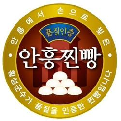

안흥찐빵 Anheung Jjinppang
강원도 횡성 안흥면 지명이 그대로 브랜드가 된 찐빵
최종 업데이트

안흥찐빵은 어떤 브랜드인가
강원도 횡성군 안흥면은 옛 보부상들의 길목이었고, 이 지역에서 만들어지던 손찐빵이 점차 유명세를 얻으며 '안흥찐빵'이라는 이름으로 알려지게 되었다. 단일 창업자가 아니라 지역 내 여러 가게들이 각자 찐빵을 만들어 팔며 지역 명물로 자리 잡았다.
이후 관광객과 방문객이 늘면서 안흥면 일대에 찐빵 전문점들이 집중적으로 형성되었다.
안흥찐빵의 브랜드 아이덴티티는 무엇인가
특정 기업의 창업이 아니라 지역 특산물이 자생적으로 브랜드화된 사례로, 지명 자체가 품질 보증 표시처럼 기능하는 구조를 보여준다. 지역 내 다수 점포가 공동으로 지명 브랜드 가치를 유지·확산하는 구조.
안흥찐빵 연혁 — 주요 사건은 언제였나
안흥찐빵 로고는 어떻게 변해왔나
자주 묻는 질문
안흥찐빵는 어떤 산업의 브랜드인가요?
안흥찐빵는 식음료 분야의 브랜드입니다.
안흥찐빵의 브랜드 아이덴티티는 무엇인가요?
특정 기업의 창업이 아니라 지역 특산물이 자생적으로 브랜드화된 사례로, 지명 자체가 품질 보증 표시처럼 기능하는 구조를 보여준다.
출처와 검증
브랜드명은 한글과 원어를 함께 표기하되 데이터에 없는 표기는 만들지 않습니다. 기원 국가·설립연도는 검수된 정의문에서 확인된 값을 우선하고, 없을 때만 공식 웹사이트 URL이 일치하는 위키데이터 개체의 값을 씁니다.